Sanatın
Zamansız Ruhu
Arthea, sanat tarihinin en değerli anlarını ve dehalarını bir araya getiren dijital bir kürasyondur. Eserlerin, sanatçıların ve kutsal sanat mekanlarının derinliklerine yolculuk yapın.
Galeri I: Rönesans'ın İncileri
![[Venüs'ün Doğuşu'nun Resmi]](https://upload.wikimedia.org/wikipedia/commons/thumb/0/0b/Sandro_Botticelli_-_La_nascita_di_Venere_-_Google_Art_Project_-_edited.jpg/500px-Sandro_Botticelli_-_La_nascita_di_Venere_-_Google_Art_Project_-_edited.jpg)
Venüs'ün Doğuşu
Sandro Botticelli
![[Mona Lisa'nın Resmi]](https://ichef.bbci.co.uk/ace/ws/640/cpsprodpb/dd02/live/695d7ac0-1129-11ef-b9d8-4f52aebe147d.jpg.webp)
Mona Lisa
Leonardo da Vinci
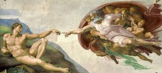
Adem'in Yaratılışı
Michelangelo
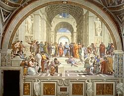
Atina Okulu
Raphael
Galeri II: Barok ve Romantizm
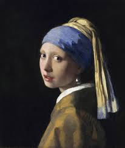
İnci Küpeli Kız
Johannes Vermeer
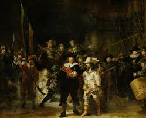
Gece Devriyesi
Rembrandt
![[Halka Yol Gösteren Özgürlük'ün Resmi]](https://www.dogubati.com/image/cache/catalog/posterler/Halka%20Yol%20G%C3%B6steren%20%C3%96zg-1024x1024.jpg)
Halka Yol Gösteren Özgürlük
Eugène Delacroix
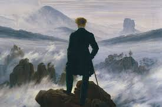
Sis Denizi Üzerinde Yolculuk
Caspar David Friedrich
Galeri III: İzlenimcilik ve Ötesi
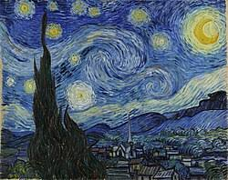
Yıldızlı Gece
Vincent van Gogh
![[Nilüferler Serisi'nin Resmi]](https://www.istanbulsanatevi.com/wp-content/uploads/2022/04/claude-monet-niluferler-02.jpg)
Nilüferler Serisi
Claude Monet
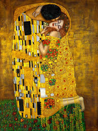
Öpücük
Gustav Klimt
![[Çığlık'ın Resmi]](https://wp.oggusto.com/wp-content/uploads/2025/05/Edvard-Munch-The-Scream.webp)
Çığlık
Edvard Munch
Galeri IV: Modern Sanatın Yüzleri
![[Belleğin Azmi'nin Resmi]](https://artucky.com/cdn/shop/articles/Salvador_Dali_-_Bellegin_Azmi_Tablosu.jpg?v=1655286295)
Belleğin Azmi
Salvador Dalí
![[Guernica'nın Resmi]](https://mir-s3-cdn-cf.behance.net/project_modules/max_1200_webp/0b73c868681015.5b655abc1fb34.jpg)
Guernica
Pablo Picasso
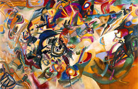
Kompozisyon VII
Wassily Kandinsky
![[No. 5, 1948'in Resmi]](https://i.milliyet.com.tr/MilliyetSanat640x412/2013/11/29/fft243_mf1245528.Jpeg)
No. 5, 1948
Jackson Pollock
Galeri V: Çağdaş Sanatın Yankıları
![[Untitled (1982) eserinin resmi]](https://www.thebroad.org/sites/default/files/styles/webp_convert_only/public/art/basquiat_untitled.jpg.webp?itok=2ev8K24x)
Untitled (1982)
Jean-Michel Basquiat
![[Kırmızı Balonlu Kız eserinin resmi]](https://www.artmajeur.com/media/cache/resolve/standard/s/a/samuel/blog/girl-with-balloon-by-banksy.jpeg)
Kırmızı Balonlu Kız
Banksy
Infinity Mirror Room
Yayoi Kusama
Ay Çekirdekleri
Ai Weiwei
Portreler I: Rönesans Dehaları
![[Leonardo da Vinci'nin Portresi]](https://wp.oggusto.com/wp-content/uploads/2023/03/leonardo-da-vinci-hayati-eserleri-ve-bilinmeyenleri-1-1.webp)
Leonardo da Vinci
1452 - 1519
Sadece bir ressam değil, aynı zamanda bir bilim insanı, mucit ve düşünürdü. İnsan anatomisi üzerine yaptığı çalışmalar ve 'sfumato' tekniğindeki ustalığı, onu tarihin en çok yönlü dehası yapmıştır.
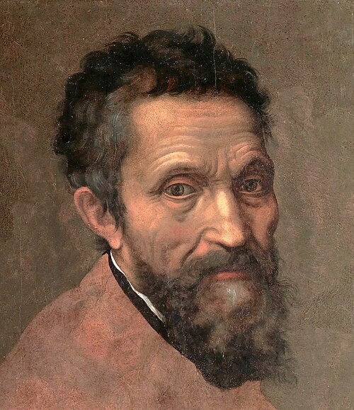
Michelangelo
1475 - 1564
Heykeltıraş, ressam, mimar ve şair. Davut heykeli ve Sistina Şapeli tavanı gibi eserleriyle insan formunun gücünü ve Tanrısal güzelliğini yansıtmıştır. Tutkulu ve ödün vermez karakteri sanatına yansımıştır.
![[Raphael'in Portresi]](https://resimbiterken.wordpress.com/wp-content/uploads/2014/01/raphael1.jpg)
Raphael
1483 - 1520
Yüksek Rönesans'ın uyum ve zarafet ustası. Eserleri, kompozisyonundaki denge, renklerindeki berraklık ve figürlerindeki dingin güzellikle tanınır. Atina Okulu, onun en büyük başyapıtlarından biridir.
Portreler II: Barok Ustaları
![[Rembrandt'ın Portresi]](https://upload.wikimedia.org/wikipedia/commons/thumb/b/bd/Rembrandt_van_Rijn_-_Self-Portrait_-_Google_Art_Project.jpg/250px-Rembrandt_van_Rijn_-_Self-Portrait_-_Google_Art_Project.jpg)
Rembrandt
1606 - 1669
Işığın ve gölgenin şairi olarak bilinen Hollandalı usta. Özellikle otoportreleri, insan ruhunun derinliklerine ve yaşlanmanın getirdiği bilgeliğe dair samimi birer incelemedir.
![[Caravaggio'nun Portresi]](https://upload.wikimedia.org/wikipedia/commons/thumb/7/73/Bild-Ottavio_Leoni%2C_Caravaggio.jpg/960px-Bild-Ottavio_Leoni%2C_Caravaggio.jpg)
Caravaggio
1571 - 1610
Barok sanatın dramatik ve isyankar dehası. Tenebrizm (güçlü ışık-gölge zıtlığı) tekniğiyle dini sahneleri sokaktaki sıradan insanların gerçekçiliğiyle birleştirerek sanatta bir devrim yarattı.
![[Johannes Vermeer'in Portresi]](https://www.biyografiler.com/personpicture/janvermeer.jpg)
Johannes Vermeer
1632 - 1675
Gündelik hayatın sessiz ve büyülü anlarını resmeden Hollandalı sanatçı. Az sayıda eser üretmiş olmasına rağmen, ışığı kullanmadaki ustalığı ve kompozisyonlarındaki dingin atmosfer ile tanınır.
Portreler III: İzlenimciliğin Öncüleri
![[Claude Monet'nin Portresi]](resimler/claude-monet.jpg)
Claude Monet
1840 - 1926
İzlenimcilik akımına adını veren sanatçı. Amacı, nesneleri değil, ışığın nesneler üzerindeki anlık etkisini ve izlenimini yakalamaktı. Nilüferler serisi bu felsefenin zirvesidir.
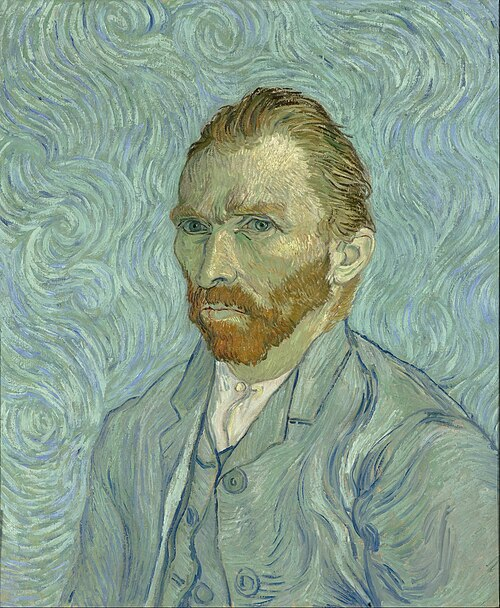
Vincent van Gogh
1853 - 1890
Duygularını kalın boya katmanları ve dinamik fırça darbeleriyle ifade eden Post-İzlenimci sanatçı. Hayatı boyunca hak ettiği değeri göremese de, sanatı bugün milyonlara ilham vermektedir.
Pierre-Auguste Renoir
1841 - 1919
İzlenimciliğin en neşeli ve hayat dolu ressamı. Özellikle Paris sosyal yaşamını, kadın figürlerini ve güzelliği resmettiği tablolarıyla tanınır. Fırçasından renk ve mutluluk akar.
Portreler IV: Sürrealizm ve Kübizm
![[Salvador Dalí'nin Portresi]](resimler/salvador dali.jpg.jpg)
Salvador Dalí
1904 - 1989
Sürrealizmin eksantrik ve dahi yüzü. Bilinçaltını, rüyaları ve tuhaf imgeleri titiz bir teknikle resmederek şaşırtıcı ve unutulmaz eserler yarattı.
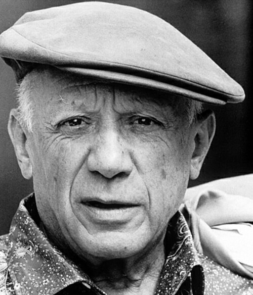
Pablo Picasso
1881 - 1973
20. yüzyıl sanatının en etkili isimlerinden biri ve Kübizm'in kurucusu. Nesneleri birden çok açıdan aynı anda göstererek geleneksel perspektif kurallarını yıktı ve sanatta yeni bir çağ başlattı.
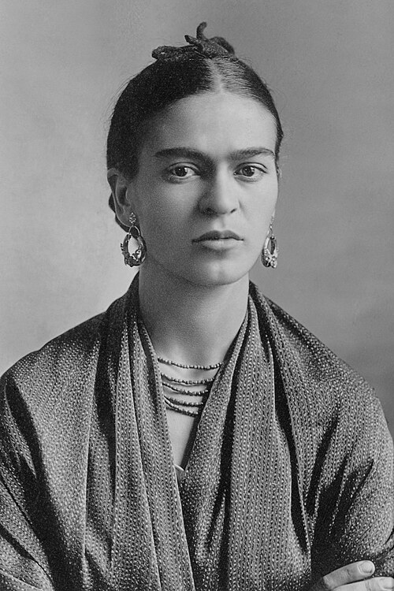
Frida Kahlo
1907 - 1954
Meksikalı ressam, acılarını, tutkularını ve kimliğini cesur otoportrelerle ifade etti. Gerçeküstü unsurları Meksika halk sanatıyla birleştirerek kendine özgü, güçlü bir dil oluşturdu.
Portreler V: Soyut ve Pop Art
![[Wassily Kandinsky'nin Portresi]](https://www.wassily-kandinsky.org/assets/img/wassily-kandinsky.jpg)
Wassily Kandinsky
1866 - 1944
Soyut sanatın babası olarak kabul edilir. Renklerin ve formların, tıpkı müzik notaları gibi, doğrudan insan ruhuna hitap eden tinsel bir gücü olduğuna inanıyordu.
![[Jackson Pollock'un Portresi]](https://upload.wikimedia.org/wikipedia/commons/thumb/1/1b/Jackson_Pollock_%28cropped%29.jpg/250px-Jackson_Pollock_%28cropped%29.jpg)
Jackson Pollock
1912 - 1956
Soyut Dışavurumculuk akımının en radikal figürü. "Damlama" tekniğiyle, tuvali bir arena gibi kullanarak resim yapma eyleminin kendisini sanat eserine dönüştürdü.
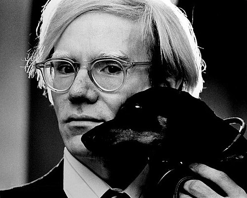
Andy Warhol
1928 - 1987
Pop Art'ın lideri. Tüketim kültürünü, ünlüleri ve seri üretimi sanatının merkezine alarak "yüksek sanat" ile "popüler kültür" arasındaki sınırları bulanıklaştırdı.
![[Louvre Müzesi'nin cam piramidi]](https://www.interbustur.com/wp-content/uploads/2016/06/louvre-m%C3%BCzesi.jpg)
Louvre Müzesi
Paris, Fransa
Aslen 12. yüzyılda bir kale olarak inşa edilen Louvre Sarayı, yüzyıllar boyunca Fransız krallarının ikametgahı oldu. Fransız Devrimi sırasında, 1793'te kapılarını bir müze olarak halka açtı ve o günden beri dünyanın en büyük ve en çok ziyaret edilen sanat müzesi haline geldi.
Antik Mısır'dan 19. yüzyıl Avrupa sanatına uzanan devasa koleksiyonu, insanlık tarihinin sanatsal bir özetini sunar. Koridorlarında, Leonardo da Vinci'nin esrarengiz Mona Lisa'sı, antik Yunan heykel sanatının zaferi Semadirek Kanatlı Zaferi ve Venus de Milo gibi paha biçilmez hazinelerle karşılaşırsınız.
![[Louvre'un içindeki heykeller]](resimler/louvre.jpg)
![[MoMA'nın dış cephesi]](https://img-s3.onedio.com/id-6454f5ecee99d2ecee6eea02/rev-0/w-600/h-375/f-jpg/s-139811a1602a505c350353ef0dc950223d07668c.jpg)
MoMA (Modern Sanat Müzesi)
New York, ABD
1929'da, Abby Aldrich Rockefeller gibi üç sanatsever kadının vizyonuyla kurulan MoMA, modern sanata adanmış ilk müzelerden biriydi. Amacı, zamanın en yenilikçi ve avangart sanat eserlerini toplayıp sergilemekti ve bu misyonunu bugün de sürdürmektedir.
Koleksiyonu, modernizmin gelişimini gözler önüne serer. Vincent van Gogh'un çalkantılı Yıldızlı Gece'si, Picasso'nun sanatı sonsuza dek değiştiren Avignonlu Kızlar'ı, Salvador Dalí'nin rüya gibi Belleğin Azmi ve Andy Warhol'un Campbell Çorba Kutuları gibi devrimci eserler bu müzenin duvarlarını süsler.
![[müzze]](https://www.istanbulsanatevi.com/wp-content/uploads/2019/06/museum-of-modern-art-new-york-galeri-gorunumu.jpg)
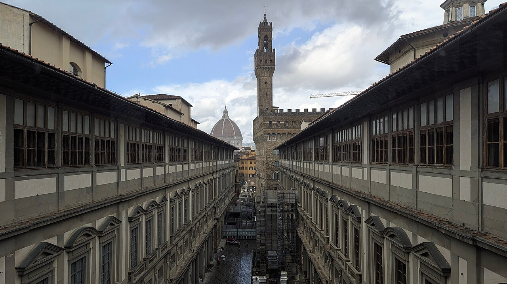
Uffizi Galerisi
Floransa, İtalya
Rönesans'ın kalbi Floransa'da yer alan Uffizi, dünyanın en eski ve en önemli sanat müzelerinden biridir. 16. yüzyılda, Floransa'nın güçlü Medici ailesi için bir idari ofis ("uffizi") olarak inşa edilen yapı, zamanla ailenin paha biçilmez sanat koleksiyonuna ev sahipliği yapmaya başladı ve 1765'te halka açıldı.
Uffizi'yi gezmek, Rönesans'ın doğuşuna ve yükselişine tanıklık etmektir. Botticelli'nin zarif Venüs'ün Doğuşu ve İlkbahar tablolarından, Leonardo da Vinci ve Michelangelo'nun erken dönem eserlerine kadar İtalyan ustalarının başyapıtları burada sergilenmektedir.
![[uffizi müzesi]](https://artdogistanbul.com/wp-content/uploads/2022/04/1.-POST-Gorsel-2-5.jpg)
![[Prado Müzesi'nin dışarıdan görünümü]](https://cdn-imgix.headout.com/media/images/07ebb7b130e6b4fa08585bc9cd989185-Prado-Museum.jpg?auto=format&q=90&crop=faces&fit=crop)
Prado Müzesi
Madrid, İspanya
1819'da Kraliyet Resim ve Heykel Müzesi olarak kapılarını açan Prado, başlangıçta İspanyol kraliyet koleksiyonunu barındırıyordu. Neoklasik tarzdaki görkemli binası, 18. yüzyılda bir doğa tarihi müzesi olarak tasarlanmış, ancak daha sonra sanatın evi olmuştur.
Prado, özellikle İspanyol sanatının altın çağına odaklanır. Diego Velázquez'in başyapıtı Nedimeler (Las Meninas), Francisco Goya'nın hem aydınlık portreleri hem de karanlık "Siyah Resimler" serisi ve El Greco'nun mistik figürleri müzenin en değerli parçalarıdır. Ayrıca Hieronymus Bosch'un fantastik eseri Dünyevi Zevkler Bahçesi de burada bulunur.
![[müze]](https://ivasanat.com/blog/wp-content/uploads/2024/11/prado-muzesi.jpeg)